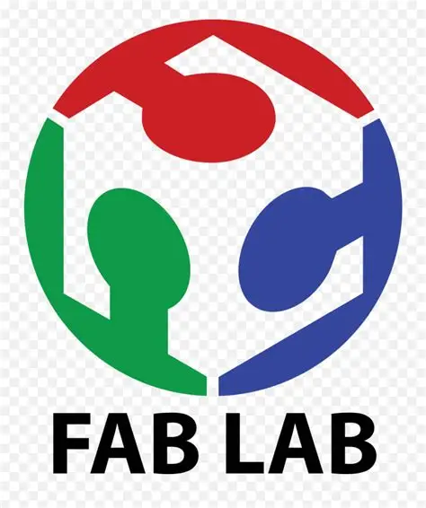

Welcome to our FABLAB digital portfolio. This website presents the projects, assignments and practical activities developed throughout the Digital Fabrication course. Each section documents the different stages of the work, from the initial idea and planning process to design, manufacturing, electronics, programming, assembly and final testing. The purpose of this portfolio is to show the knowledge, technical skills and creative solutions developed during the semester.
This section contains the documentation of the assignments completed throughout the course. It includes activities related to electronic circuit design, PCB manufacturing, Arduino programming, computer-aided design and digital fabrication. Each assignment presents the development process, the tools used, the results obtained and the knowledge acquired during its completion.
Explore the practical activities carried out during the semester. These exercises were developed to reinforce the theoretical concepts studied in class through hands-on experience. The section includes the use of fabrication tools, equipment operation, manufacturing procedures, assembly processes and technical tests performed in the laboratory.
Open SectionThis section presents the midterm project developed during the first part of the course. It includes the planning, design, manufacturing and implementation stages, showing how different digital fabrication techniques were combined to solve a specific engineering challenge and obtain a functional result.
Open ProjectThe Final Project represents the integration of the knowledge and skills acquired throughout the entire course. It presents the complete development of an intelligent waste sorting bin, beginning with the identification of the problem and the generation of ideas. The project also includes mechanical design, electronic circuit development, PCB manufacturing, programming, prototype assembly, system operation, testing and validation of the final solution.
Open Final ProjectThis digital furniture project was inspired by the design and assembly principles commonly used in IKEA products. The work focused on creating a functional piece of furniture that could be manufactured using digital fabrication tools, while considering material optimization, ease of assembly, precision cutting and an efficient structural design.
Open ProjectThis section provides information about the members of our team, our academic objectives and the responsibilities assumed during the development of the different projects. It also highlights the importance of teamwork, communication, organization and the application of technical knowledge in the creation of innovative digital fabrication solutions.
Learn More